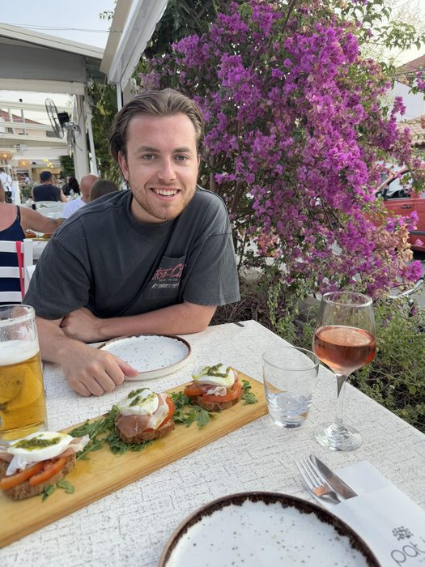

Hoi, ik ben Tuur.
Ik ben 26 jaar, woon in Sittard samen met mijn vriendin Eva en rijd al een tijdje elektrisch. Niet alleen omdat het financieel loont — al doet het dat zeker — maar gewoon omdat het fijn is.
Overdag werk ik als Manager EV-Charging & Energy Services bij een parkeerexploitant in transitie naar brede mobiliteit. Ik ben dagelijks bezig met laadinfrastructuur, energiecontracten, netcapaciteit en alles wat daarmee samenhangt.
Die kennis wil ik ook beschikbaar maken voor mensen die er thuis of bij hun bedrijf mee aan de slag willen. Zonder verkoopbelang, zonder gedoe. Gewoon een eerlijk gesprek.
Waarom De Schakelaar?
Als je een laadpaal wil, kom je al snel terecht bij een installateur die ook zijn eigen merk verkoopt. Of bij een dealer met een aanbieding. Dat advies is nooit puur in jouw belang — er zit altijd een commissie of voorkeur achter.
Ik verkoop geen laadpalen en installeer ze ook niet. Ik verdien niets aan een bepaald merk. Dat maakt het verschil: ik kijk alleen naar wat het beste bij jou past.
Mijn achtergrond
Ik ben in de EV-wereld terechtgekomen bij een producent van elektrische vrachtwagens, waar ik analyses maakte voor accountmanagers. Daarna begon ik als junior projectleider EV-charging en groeide ik door naar mijn huidige managementfunctie — verantwoordelijk voor de hele laadbusiness én het energiebeheer.
Door de juiste afstemming van mijn eigen energiesysteem zijn mijn elektrakosten negatief: vorig jaar kreeg ik per saldo geld terug. Dat is precies het soort praktische kennis dat ik graag met anderen deel.
Particulieren — laadpaaladvies aan huis in Limburg. Ik bekijk je situatie ter plaatse en geef concreet, onafhankelijk advies.
Werkgevers — laadbeleid opstellen, laadpalen op het pand, thuislaadvergoeding en webinars voor medewerkers.
Contact
Een telefonische intake is altijd gratis en vrijblijvend. Ik bel buiten kantoortijden — 's avonds of in het weekend.
- E-mail: info@deschakelaaradvies.nl
- Adres: Steegstraat 46, 6133 AL Sittard
Gratis intake plannen
In 15 minuten weet je of ik iets voor je kan betekenen. Geen verplichtingen.
Plan je intake